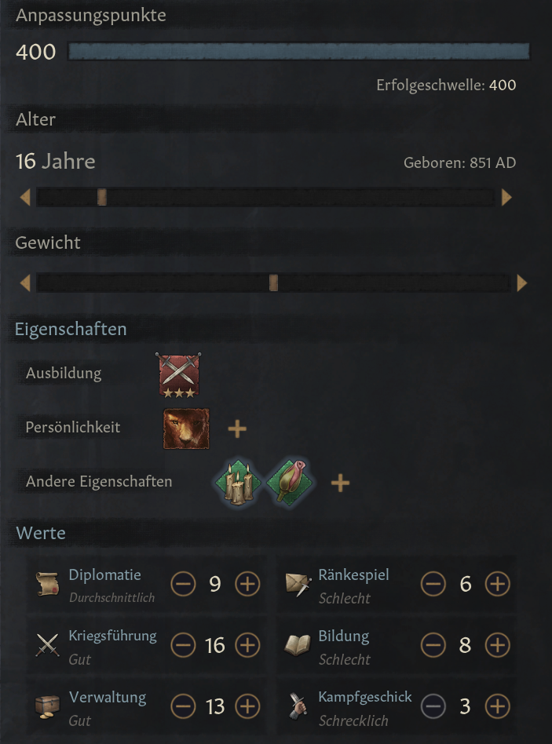

Education / Training
In ck3 you can train your descendant in 5 different fields of expertise: stewardship, warfare, education, intrigue and diplomacy.
At the end of the descendants training (age 16) they receive a skill ranking from 1 to 5, giving them certain bonuses.
The better their teacher was, the better their ranking will be.
Stewardship
Stewardship is the art of administration. The higher the character stewardship ranking is, the more effective are the domains, and the more taxes will be paied by the vassals. In addition to that, it also enables
the player to hold more domains.
Warfare

Warfare is the most straightforward way of expanding a character's Realm, using armies to take titles by force.
The better your character is skilled in warfare, the faster and more effective can he command his armies. In addition to that, your character will be able to gain certain expertise in warfare,
which unlock certain perks.
Diplomacy
Diplomacy is a character skill that increases general opinion and prestige. This has the effect that other rulers will be more likely to accept your terms, forge alliances and accept marriages.
Education
While not necessarily as exciting as the other four main stats that characters have in Crusader Kings 3, education is an important one as it dictates a realm's technological development, piety growth, prestige costs, and more.
The better educated the character, the faster your culture and realm can discover new technologies.
Intrigue

Intrigue is a character skill that influences effectiveness in schemes. It influences how effective your murder, seduction, kidnapping and any other type of scheme
How would I create my character?
In the image above, you can see the points you have used up by picking certain traits. To still be able to gain achievements and
not make the play through too easy, I would stay below 400 points. I would choose an education in either stewardship or warfare
at stage 3. This does not cost too many points. Furthermore, I would choose 2 personality traits. Last but not least, it is
important to choose at least one trait that can be inherited. I would choose intelligent,
since this boosts your character in all fields. In addition to the above, I would lower the starting age to 16, since you are a full adult at this point,
but it gives you a few extra points by starting at a young age.
This is how I would start out:

In ck3 you can train your descendant in 5 different fields of expertise: stewardship, warfare, education, intrigue and diplomacy. At the end of the descendants training (age 16) they receive a skill ranking from 1 to 5, giving them certain bonuses. The better their teacher was, the better their ranking will be.
Stewardship
Stewardship is the art of administration. The higher the character stewardship ranking is, the more effective are the domains, and the more taxes will be paied by the vassals. In addition to that, it also enables the player to hold more domains.
Warfare
Warfare is the most straightforward way of expanding a character's Realm, using armies to take titles by force. The better your character is skilled in warfare, the faster and more effective can he command his armies. In addition to that, your character will be able to gain certain expertise in warfare, which unlock certain perks.
Diplomacy
Diplomacy is a character skill that increases general opinion and prestige. This has the effect that other rulers will be more likely to accept your terms, forge alliances and accept marriages.
Education
While not necessarily as exciting as the other four main stats that characters have in Crusader Kings 3, education is an important one as it dictates a realm's technological development, piety growth, prestige costs, and more. The better educated the character, the faster your culture and realm can discover new technologies.
Intrigue
Intrigue is a character skill that influences effectiveness in schemes. It influences how effective your murder, seduction, kidnapping and any other type of scheme
How would I create my character?
In the image above, you can see the points you have used up by picking certain traits. To still be able to gain achievements and
not make the play through too easy, I would stay below 400 points. I would choose an education in either stewardship or warfare
at stage 3. This does not cost too many points. Furthermore, I would choose 2 personality traits. Last but not least, it is
important to choose at least one trait that can be inherited. I would choose intelligent,
since this boosts your character in all fields. In addition to the above, I would lower the starting age to 16, since you are a full adult at this point,
but it gives you a few extra points by starting at a young age.
This is how I would start out: